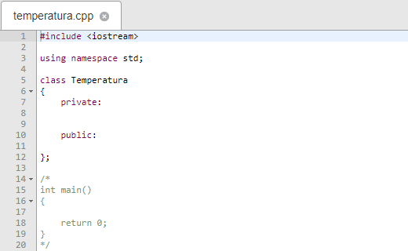

Instrucciones del Ejercicio
-
Esta es una APP (Asignación de Práctica de Programación) y las calificaciones obtenidas NO se contarán para su calificación final.
-
Para probar su programa, haga clic en el archivo 'temperatura.cpp'. Copie y pegue desde el Codeblocks el código de su solución dentro del inicio y el final
de la clase respectivamente (entre las llaves de apertura y cierre de la clase) en el archivo 'temperatura.cpp'.
Importante: Su código NO DEBE CONTENER NINGÚN TIPO DE COMENTARIO. Si su código contiene comentarios, provocará falsos errores.
-
Dentro del mismo archivo y después del código de la clase 'Temperatura', pegue el código correspondiente a main dentro del comentario multilínea. Este es
el único comentario que debe haber en todo el archivo 'temperatura.cpp'.
De tal manera, el archivo 'temperatura.cpp' tendrá la siguiente estructura:

-
Haga clic en el archivo 'resultados.txt' para colocar los resultados de su programa. Ingrese los resultados obtenidos por su programa respetando el formato
indicado en las instrucciones (ver "Ejercicio - Temperatura.pdf").
NO pegue los resultados obtenidos de su programa aquí, ya que NO se podrán leer correctamente.
Respete el formato indicado en el pdf, en caso contrario, el simulador marcará sus resultados como erróneos aunque sean correctos.
-
Haga clic en 'Compile' para compilar su código y luego en 'Run' para ejecutar su programa y ver el resultado.
En caso de hacer alguna moficación en alguno de los archivos es necesario compilar nuevamente y ejecutar su programa para ver los cambios.
-
Tenga en cuenta que 'int main' debe ir comentado. Si lo descomenta, no podrá ejecutar su programa.
-
NO escriba declaraciones INPUT o OUTPUT, es decir, no debe incluir declaraciones como cin, cout, scanf, printf, etc. en su código.
Nota:
Cuando actualice su navegador, el código que ha escrito en el espacio provisto se perderá.